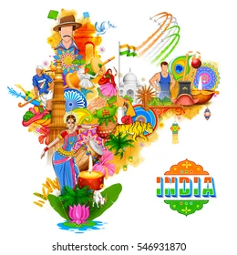

INDIAN TRADITIONS
INDIAN TRADITIONS

India’s traditions are a vibrant tapestry woven from centuries of history, philosophy, art, and spirituality. Here’s a glimpse into some key aspects of Indian traditions:
Festivals and Celebrations:
India is home to a rich tapestry of festivals and celebrations, reflecting its diverse cultures, religions, and traditions. Each festival often has its own unique significance, rituals, and ways of celebration, making them an integral part of Indian life.
Classical Music and Dance
Indian music and dance have deep cultural and spiritual roots, evolving over thousands of years with influences from religion, mythology, and diverse regional practices. Here’s a glimpse into their key features:
Cuisines and Spices
Indian cuisine is not only diverse but also deeply intertwined with its spices, which are fundamental to its flavor profiles and culinary practices. Here's a closer look at Indian cuisines and the spices that define them:
Family and community bondings
Family and community bonding in Indian traditions are integral to social life, rooted in cultural values and historical practices. Traditionally, Indian families often operate as joint families, where multiple generations live together, fostering close relationships and shared responsibilities. Respect for elders is a fundamental value, with older family members seen as decision-makers and sources of wisdom. Cultural practices and festivals, such as Diwali and Eid, serve as occasions for family gatherings, reinforcing bonds through shared rituals and meals. Community connections, especially in rural areas, create a sense of belonging, as neighbors often act as extended family. These networks provide emotional and financial support, particularly during life's significant events like weddings and births. Education is highly valued, with families prioritizing their children's academic achievements as a pathway to social mobility. Additionally, cultural and religious organizations strengthen community ties by promoting social interaction and cultural preservation. While urbanization and globalization are reshaping these dynamics, the essence of family and community bonding remains a cornerstone of Indian life, emphasizing the importance of emotional ties and collective identity in navigating modern challenges.
Spirituality and Philosophy
Spirituality:
Spirituality often refers to a sense of connection to something greater than oneself, encompassing a personal search for meaning in life. It involves various practices, such as meditation, prayer, mindfulness, and rituals, through which individuals may find spiritual fulfillment in nature, community, art, or personal reflection. While spirituality can be linked to organized religions like Christianity, Buddhism, or Hinduism, it can also exist independently of traditional religious frameworks; many individuals identify as spiritual but not religious. The goals of spirituality typically include personal growth, inner peace, and a profound sense of belonging or connection to the universe.
Philosophy:
Philosophy is the systematic study of fundamental questions regarding existence, knowledge, values, reason, mind, and language, seeking to understand the nature of reality and our place within it. It encompasses various branches, including metaphysics (the study of reality), epistemology (the study of knowledge), ethics (the study of right and wrong), logic (the study of reasoning), and aesthetics (the study of beauty). With roots in ancient cultures, philosophy has been shaped by significant figures such as Socrates, Plato, Aristotle, Confucius, and more modern thinkers like Descartes, Kant, and Nietzsche. Philosophical inquiry often employs critical thinking, logical argumentation, and rigorous analysis of concepts and beliefs, allowing for a deeper exploration of the complexities of human experience.
Arts and Crafts
Arts:
Indian arts encompass a rich and diverse array of forms that reflect the country’s extensive cultural heritage and historical influences. Textiles play a central role, with various fabrics like silk and cotton showcasing unique regional styles, such as Kanjeevaram from Tamil Nadu and Banarasi from Uttar Pradesh. Embroidery techniques, including Zardozi, Chikan, and Kantha, add intricate details to garments and home decor, highlighting the skill of artisans. Painting traditions are equally vibrant, with styles like Madhubani from Bihar and Warli from Maharashtra illustrating mythological themes and daily life through vivid colors and geometric patterns. Sculpture is a significant aspect of Indian art, featuring ornate carvings in temples and monuments, with rock-cut sculptures from Ajanta and Ellora serving as prime examples. Additionally, India’s classical music and dance forms, such as Bharatanatyam, Kathak, and the distinct regional styles of Hindustani and Carnatic music, embody deep cultural roots and artistic expression. Together, these artistic expressions create a multifaceted landscape that celebrates the richness of Indian heritage.
Crafts:
Indian crafts represent a vibrant and diverse array of handmade items that are deeply rooted in tradition and cultural identity. Pottery is a significant craft, with distinct styles varying across regions, such as blue pottery from Jaipur and terracotta crafts from West Bengal, producing both functional and decorative pieces. Woodwork showcases intricate carvings, evident in furniture and ornamental items, with regional styles reflecting the skills and artistry of local craftsmen. Metal crafts, particularly in brass and copper, yield exquisite utensils and decorative artifacts, with artisans in Kerala being especially noted for their metalwork. Jewelry making is another vital craft, featuring styles like Kundan and Meenakari that highlight intricate designs and cultural significance. In the northeastern regions, bamboo and cane crafts thrive, producing functional and decorative items, while handmade paper and paper mache crafts contribute to the artistic landscape. Many traditional crafts are closely tied to festivals and rituals, such as creating rangoli for Diwali or crafting effigies for Dussehra, emphasizing their cultural importance. Furthermore, these crafts often adhere to sustainable practices, utilizing locally sourced materials and techniques passed down through generations, ensuring that they remain a vital part of India’s cultural heritage.